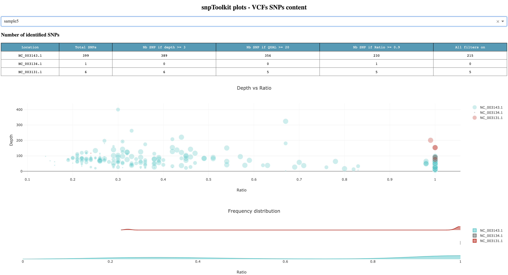

3. The explore command¶
snptoolkit explore -h
usage: snptoolkit explore [-h] -i IDENTIFIER
optional arguments:
-h, --help show this help message and exit
snpToolkit explore required options:
-i IDENTIFIER Provide the input vcf files
This command allows user to explore the SNPs on each of their vcf files.
The option -i allows to specify a common identifier in the vcf files names. If you want to explore all VCF files in a folder, you can use vcf as identifier as it is present in all vcf file names (usually filename.vcf.gz). On the contrary, if you have added in the filenames of your vcf files, for example, the years of isolation of each sample, you can use the year you want as identifier.
when you run the command:
$ snptoolkit explore -i vcf
[TIME][INFO] [snpToolkit is extracting your data and creating the different plots...]
progress: 100%|#########################################################################| 9/9 [00:00<00:00, 83.75it/s]
Dash is running on http://127.0.0.1:8050/
* Serving Flask app "explore_snpToolkit" (lazy loading)
* Environment: production
* Running on http://127.0.0.1:8050/ (Press CTRL+C to quit)
snptoolkit will analyze all raw data on each VCF file in terms of SNPs and starts a web application that you access using the link mentioned above http://127.0.0.1:8050. For this example of 10 vcf files, it took less than a second to analyze all files. Figure 1 shows a screenshot of the generated dashboard to explore your data.
{kind=link}
Figure1
For sample 5 for example, we can see that the total number of SNPs in the chromosome NC_003143.1 is 399 SNPs. This is the total raw number. Lets detail each column of the first table:
If we apply just the depth filter (-d) when using the option annotate (see below), only 10 SNPs will be excluded as they have a coverage less than 3.
If we consider 20 as a cutoff for the quality of each SNPs, the number drop to 356 SNPs
If we only consider those that have a ratio (nb reads with mutated allele/total number of reads on that position) ≥ 0.9, the number of SNPs drops to 230.
If all filters are used: depth ≥3, QUAL ≥20 and ratio≥0.9, the number of filtered SNPs will be equal to 215.
For the case of Yersinia pestis, there are 3 plasmids. For sample 5, there are SNPs on plasmid NC_003134.1 and NC_003131.1
The first plot in Figure1 shows the distribution of all SNPs based on Ratio (x axis) and Depth (y axis). The size of each circle is proportional to the quality of each SNP. The second plot complement the first plot as it give you an idea about the proportion of SNPs for the chromosome and each of the plasmids. For the chromosome NC_004143.1, we can see that there is a small proportion of SNPs located between 0.2 and 0.4, but most of the SNPs has a high ratio ≥ 0.9.
To hide any of the data presented on each plot, you just need to select the name that you want.